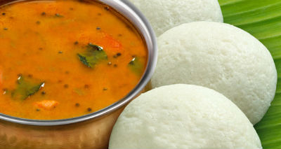

About South Indian Recipes
Rice is the staple food for the people of South India. Consumption of wheat is less compared to North India. Most of the vegetarian and non-vegetarian dishes of this region have a generous use of coconuts, pepper, mustard seed and other spices. Generally South Indian dishes are spicy. It has brilliant blend of flavors, bright colors, smell, and taste. So, south Indian foods are enerally tasty, spicy and colorful. Moreover south Indian food is known for its medicinal value.Tamil Nadu, Karnataka, Andhra Predesh and Kerala are the four states that constitute South India. South India is hot and humid. South Indians are generally vegetarian. Andhra cuisine from Andhra Predesh is too spicy. They use more chilli and pepper. Chettinad cuisine from Tamil Nadu is rich and flavorful taste. Coconut, banana are main ingredients of Kerala food.
1.IDLY

- 1.Soak the rice and urad dal in separate bowls for at least 4 hours. These will be later ground together to make a batter which ferments for 6 hours or more.
- 2.Grind the soaked items separately. This is best done with a stone grinder, but a high powered blender can also do the job (although the batter will be somewhat more coarse in texture).
Grind the soaked rice.
Grind the soaked urad dal.
- 3.Mix the ground rice and urad dal together.
- 4.Set aside in a warm place to ferment for 8 hours. Use a crock pot on the "keep warm" setting or an oven on the "proof" setting if you live in an area where the ambient temperature is below 75 °F (24 °C).
- 5.Add salt.
- 6.Oil the idli steamer plates.
- 7.Spoon the batter into the plates.
- 8.Set the idli steamer into a large, pre heated pot with water in the bottom for steaming.
- 9.Steam the batter for 5-10 minutes or until fluffy.
- 10.Remove the idlis from the steamer and serve warm with Chutney, or Sambhar.